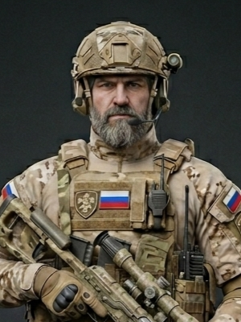
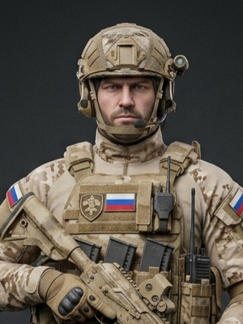
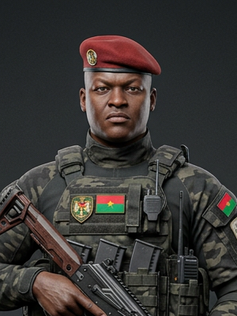

Em um futuro próximo, o Sahel tornou-se o epicentro de uma disputa global por recursos. Em Burkina Faso, sua unidade de elite deve operar nas sombras, enfrentando tempestades de areia e dilemas táticos em um terreno onde cada passo pode ser o último.

Especialista em Reconhecimento e infiltração em ambientes áridos.

Especialista em demolições e suporte pesado.

Especialista em demolições e suporte pesado.